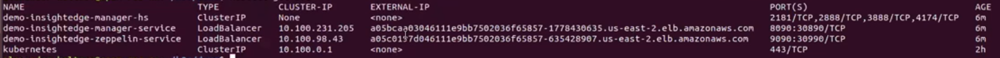
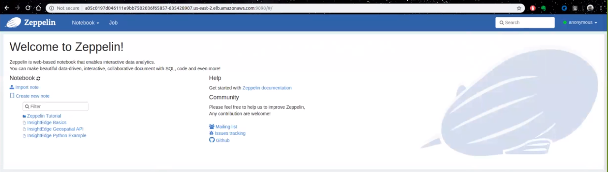

Deploying GigaSpaces Platforms on Azure AKS
This topic explains how to deploy KubeGrid on Azure Kubernetes Service (AKS). Before you begin, you should have the following already set up and/or installed in your development environment:
- Azure account
- Kubectl
- Helm
Deploying KubeGrid on Azure AKS requires the following steps to set up the environment, deploy Kubernetes on the cluster, and then install the GigaSpaces platform:
- Installing the Azure CLI.
- Creating a resource group for your AKS cluster.
- Creating an AKS cluster for KubeGrid.
- Configuring kubectl to connect to your AKS cluster.
- Creating a service account for Helm and deploying Tiller.
- Deploying KubeGrid using the |Helm charts.
Deploying involves the same tasks as deploying the data grid. The deployment tasks described below use insightedge Helm charts. However, you can also perform these tasks using the xap Helm charts (except for Apache Zeppelin, which is part of the deployment).
Setting Up the AKS Environment
Before you can install KubeGrid, you need to set up the AKS environment so that you have a Kubernetes cluster that can host your platform with full connectivity. This involves the first three steps mentioned above.
Installing the Azure CLI
In order to create your resource group and the AKS cluster, you need to use the Azure CLI. Installation instructions for this command line interface are available on the Microsoft website. Follow the set of instructions that suits your specific development environment.
After the CLI is installed, log into Azure using the following command:
az login
Creating a Resource Group
You need to create a resource group for the AKS cluster where you will install KubeGrid.
-
Type the following Azure CLI command, assigning a group name (for example, InsightEdgeAKSGroup) and your general geographical location (for example, eastus).
az group create --name <group-name> --location <group-location>
The output you get after executing the above command should look as follows:
{
"id": "/subscriptions/<guid>/resourceGroups/<myResourceGroup>",
"location": "<myLocationGroup>",
"managedBy": null,
"name": "<myResourceGroup>",
"properties": {
"provisioningState": "Succeeded"
},
"tags": null
}
Creating a New AKS Cluster
The next step in preparing the AKS environment is to create a new cluster that will host the KubeGrid instance.
-
Type the following command to create a cluster with 3 nodes. You must specify the group name (for example, InsightEdgeAKSGroup) and the cluster name (for example, InsightEdgeAKSCluster).
az aks create --resource-group <group-name> --name <cluster-name> --node-count 3 --enable-addons monitoring --generate-ssh-keys
You can use the Azure portal to check your AKS resource group, and to verify that your cluster is up and running.
Deploying Kubernetes on the AKS Cluster
After you set up your Azure AKS environment, you have to deploy Kubernetes on the AKS cluster by configuring kubectl to connect to the cluster, and setting up a Tiller service account (the Helm server-side, in-cluster component).
Configuring Kubectl
In order to use the AKS cluster to host Kubernetes and KubeGrid, kubectl needs to be able to connect to the cluster.
-
Type the following command to connect kubectl to the AKS cluster. You must specify the group name (for example, InsightEdgeAKSGroup) and the cluster name (for example, InsightEdgeAKSCluster).
az aks get-credentials --resource-group <group-name> --name <cluster-name>
-
Verify the connection to the AKS cluster in kubectl by typing the following command.
kubectl get nodes
The output should look like this, with all the nodes in "Ready" status.
Creating a Service Account for Helm
The last step before being able to deploy KubeGrid on AKS in creating a service account for Helm in Azure and installing Tiller on the cluster.
-
Create a helm-rbac.yaml file in an accessible location.
-
Paste the following content into the file, which specifies that you are creating a Kubernetes service account with ClusterRole role binding that includes administrator privileges on the cluster.
apiVersion: v1
kind: ServiceAccount
metadata:
name: tiller
namespace: kube-system
---
apiVersion: rbac.authorization.k8s.io/v1
kind: ClusterRoleBinding
metadata:
name: tiller
roleRef:
apiGroup: rbac.authorization.k8s.io
kind: ClusterRole
name: cluster-admin
subjects:
- kind: ServiceAccount
name: tiller
namespace: kube-system
-
Apply the service account and role binding that you specified in the file using the following command:
kubectl apply -f helm-rbac.yaml
Deploying Tiller in the AKS Cluster
Lastly, you need to deploy Tiller in the cluster so you can interact directly with the Kubernetes API server to administer the Kubernetes resources.
If you don't have Helm installed, follow the instructions in the Helm documentation to install it.
Deploying KubeGrid on Azure AKS
This page provides general information on how to deploy KubeGrid in a Kubernetes cluster. For detailed installation and configuration instructions, see Deploying a Data Grid in Kubernetes.
Use the following command to fetch the GigaSpaces Helm charts and unpack them locally:
helm fetch gigaspaces/insightedge --version=14.0 --untar
You should also verify that your KubeGrid EKS cluster is active using the Amazon EKS console, and that the KubeGrid and worker nodes were created using the CloudFormation console.
Installing KubeGrid
In order to ensure that will work properly in the Amazon EKS environment, the default service type (NodePort) in the manager and zeppelin Helm charts must be changed to LoadBalancer before applying the Helm install command.
To install :
- Modify the Helm charts:
-
Open the insightedge-manager values.yaml file, and change the service type from NodePort to LoadBalancer. The chart should look like this:
# service: Platform Manager service configuration.
service:
# type: Service type.
type: LoadBalancer
- Make this same change in the
insightedge-zeppelin values.yaml file.
- Save both files.
-
Type the following command to deploy in Amazon EKS:
helm install insightedge --name demo --set pu.partitions=2,pu.ha=true
Verifying the KubeGrid Installation
After installing , best practice is to check that the Kubernetes services have external IP addresses, verify that is up and running, and that you can open the Apache Zeppelin web notebook.
To verify the installation:
-
Check that the Kubernetes services have external IP addresses so the pods can communicate. Type the following command:
kubectl get svc
You should see output that looks similar to this:

-
Copy the Manager IP address to a browser window and add the port number (8090). The Rest Manager API screen should load.

- Perform a simple test by using one of the REST APIs, for example
GET/spaces.
-
Copy the Zeppelin IP address into the browser window and add the port (9090). The Apache Zeppelin web notebook should load.

Deploying the Kubernetes Dashboard
The last step is deploying the Kubernetes dashboard in Amazon EKS, so you can properly administer your Kubernetes-based application. See the Amazon dashboard tutorial page for instructions.